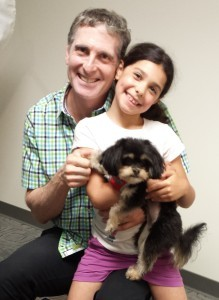

He is a highly sought after eye surgeon and is known as "The
Surgeon's Surgeon" since so many other surgeons come to Dr. Brian for
surgery on their own eyes – including eye surgeons, brain surgeons,
orthopedic surgeons, plastic surgeons, and breast cancer surgeons to
just name a few.

Dr. Brian and his family love dogs
Doctors representing all parts
of the Medical field commonly fly in from around the United States and
outside countries to have Dr. Brian treat them with his unique and
proprietary treatments. His surgery patients also include many
Registered Nurses and Pharmacists. Dr. Brian is also sought after by
numerous celebrities, film and TV stars, famous musicians, professional
athletes, CEOs, and goverment leaders in the United States and abroad
who literally have millions of dollars on the line and trust only Dr.
Brian with their eyes.
One of Dr. Brian's special qualities is that although he sees patients
from all "walks of life" (famous and non-famous), Dr. Brian is
described as one of the most "down to earth" doctors people have met.
Everyone receives the same high quality of care regardless if you are a
famous celebrity or a manual laborer in the field. He has a special
empathy for all people who have eye problems and his career mission is
to help everyone who needs him.